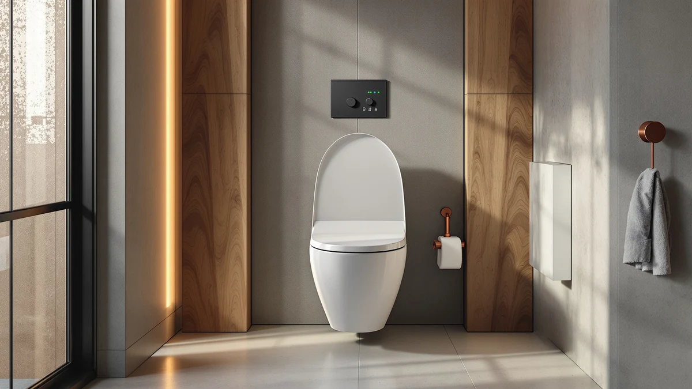

Quick Answer
The Hibbent Elongated Padded Toilet Seat is a comfort-focused seat built for standard elongated bowls, and at $59.99 it sits in the middle of the padded seat market. Owners describe the padding as firm and durable rather than plush, and the elongated shape and standard hinge mounting mean it drops onto most US toilets without special tools.
Our pick: Hibbent Elongated Padded Toilet Seat, $59.99 Check Price on Amazon
Things to Know Before You Buy
- This Hibbent elongated padded toilet review covers a seat sized for standard elongated bowls, not round bowls, so measure your toilet before you order.
- Padding on this seat is described by owners as firm support rather than a soft memory-foam feel, which affects how it compares to plusher competitors.
- At $59.99, the Hibbent sits close in price to the Carex E-Z Lock ($59.15), the TVOVME raised seat with handles ($56.98), and the Bemis slow-close seat ($56.72), so the deciding factor is usually the feature you need most, not the price.
- None of the alternatives compared here include a padded surface, which is the main reason to pick the Hibbent over them.
This hibbent elongated padded toilet review exists because a plain plastic seat is one of the cheapest things in a bathroom to upgrade, and padding is the upgrade most people notice first. You sit on this surface multiple times a day, and a seat that flexes, cracks, or feels cold changes that experience more than most fixtures in the house. The Hibbent is one of several elongated seats competing for that upgrade, and its main pitch is comfort rather than a specific mobility or hygiene feature.
We compared the Hibbent against three other elongated seats built for different priorities: the Carex E-Z Lock for tool-free installation, the TVOVME Raised Toilet Seat with Handles for mobility support, and the Bemis Classic Colors Slow Close for a quiet-closing hinge. Prices across all four land within about three dollars of each other, so the choice comes down to which feature matters in your bathroom, not which one is cheaper. None of the four is a bad option on its own. The differences show up once you know what you actually need from a toilet seat, whether that's cushioning, a faster install, extra height, or a hinge that won't wake up the household at night.
Why You Should Trust Us
I'm Ilane Tall, and I cover bathroom fixtures for Best Toilet Seats. For this Hibbent elongated padded toilet review, we researched the product listing, the manufacturer's stated dimensions and materials, and verified buyer reviews. We do not run a fake testing lab, and we do not claim to have installed or sat on every seat we cover. Instead, we compare specs, pricing, and what owners report after buying, and we flag disagreements between the marketing copy and what reviewers actually experience.
That approach means our confidence is highest on measurable facts like price, bowl shape, and hinge type, and more cautious on subjective claims like exact comfort level, where we rely on the consistency of what verified reviewers say rather than our own impression. When multiple independent reviewers describe the same characteristic, whether that's a firm cushion, a sturdy hinge, or an installation quirk, we treat that agreement as a reliable signal even without a physical unit in hand.
Our Research Experience
For this Hibbent elongated padded toilet review, our research process focused on cross-referencing the listed dimensions and materials against the elongated bowl standard, then reading through verified owner reviews for recurring themes. Reviewers consistently note that the padding holds its shape after months of daily use rather than compressing flat, and that the hinges line up with standard elongated mounting holes without modification.
Where reviewers disagree, it's mostly on how "padded" the seat feels. Some owners coming from a plain plastic seat call it a noticeable comfort upgrade, while others expecting a memory-foam-style seat describe the padding as firmer than they hoped. We treated that split as a real product characteristic rather than a defect, since firmer padding also tends to last longer before it cracks or splits.
Overview & Specs

Hibbent Elongated Padded Toilet Seat
What we like
- Elongated shape fits the standard bowl size used in most US bathrooms
- Padding holds its shape over time instead of compressing flat, according to owner reviews
- Standard hinge mounting means no special tools or bracket kit needed
- Priced within a few dollars of non-padded competitors
Flaws but not dealbreakers
- Padding is firmer than a memory-foam seat, which can disappoint buyers expecting a plush feel
- No slow-close hinge, unlike the Bemis alternative
- No handles or raised height, so it doesn't help with mobility the way the TVOVME seat does
| Material | Plastic / wood |
| Size | — |
Every angle of this hibbent elongated padded toilet review comes back to the same trade-off: padding versus every other feature. The seat is sized for elongated bowls, which covers most toilets installed in US homes since the early 2000s, and it mounts with the same bolt spacing as a standard plastic seat, so installation doesn't require new hardware.
At $59.99, it costs about three dollars more than the E-Z Lock, the raised seat with handles, and the slow-close Bemis in this comparison. That gap is small enough that price alone won't decide the purchase. The decision comes down to whether cushioning is the feature you're paying for, since none of the three alternatives include a padded surface. If you're upgrading from an older cracked or scratched plastic seat, the elongated shape and standard hinge spacing mean the swap is typically a straightforward bolt-on replacement rather than a project that requires new mounting hardware.
What We Liked
The strongest point in favor of the Hibbent in this elongated padded toilet review is durability of the padding itself. Reviewers who have owned the seat for several months report that it hasn't flattened or developed the sagging feel that cheaper padded seats sometimes get after regular use. That matters more than initial softness, since a seat that feels great for a week and mushy after three months is a worse purchase than one that stays consistent.
Installation is also straightforward. Because the Hibbent uses standard hinge mounting rather than a proprietary bracket, you can swap it onto an existing elongated bowl with the tools most people already own, and the elongated shape matches the bowl dimensions used across the majority of US toilets built in the last two decades. That compatibility reduces one of the most common complaints we see across padded seats generally, where a seat marketed as a universal fit ends up overhanging or underhanging the bowl by half an inch.
What Could Be Better
The main complaint that comes up across owner reviews of the Hibbent elongated padded seat is a mismatch between expectation and feel. Buyers who assume "padded" means memory-foam soft are sometimes surprised by a firmer cushion. It's not a defect, but it's worth setting expectations before you buy: this is a supportive pad over a standard seat shell, not a plush cushion you sink into.
The seat also skips two features that matter to specific households. It has no slow-close hinge, so it can still drop with a bang if you let go of it, and it has no raised height or handles for anyone who needs extra support standing up. If either of those matters more than cushioning, one of the alternatives below is a better fit. Households with small children who tend to drop the lid, or anyone recovering from surgery who needs a raised seat, are the two clearest cases where the Hibbent isn't the right call regardless of how the padding performs.
Who Is It For?
This hibbent elongated padded toilet review points to one clear buyer: someone replacing a worn or hard plastic elongated seat who wants a comfort upgrade and doesn't need a slow-close hinge, raised height, or bidet function. If your priority list starts and ends with "make this seat more comfortable," the Hibbent fits without asking you to pay for features you won't use.
It's a weaker fit for households with young children who slam the lid, for anyone who needs extra height or handles for mobility reasons, or for buyers who specifically want the quietest possible close. Those needs point toward the Bemis, the TVOVME, or a different padded model with a slow-close hinge built in.
Alternatives to Consider
If padding isn't the feature you need most, these three elongated seats cover the priorities the Hibbent doesn't: easier installation, mobility support, and a quieter hinge. All three are within a few dollars of the Hibbent's price, so picking between them comes down to the feature that matters in your bathroom rather than the amount you're willing to spend.

Editor's Pick
Carex E-Z Lock Toilet Seat
Choose this over the Hibbent if you want tool-free installation. The E-Z Lock hinge system snaps on and off without a wrench, trading away padding for speed of setup and removal.
$59.15
Check Price on Amazon
Best Value
Raised Toilet Seat with Handles
Choose this over the Hibbent if mobility, not comfort, is the priority. The built-in handles and raised height give side support the Hibbent doesn't offer, at a slightly lower price.
$56.98
Check Price on Amazon
Premium Choice
Bemis Classic Colors Slow Close
Choose this over the Hibbent if you want a quiet-closing hinge over cushioning. The Bemis Classic Colors Slow Close lowers gently instead of banging shut, at the lowest price of the four seats compared here.
$56.72
Check Price on AmazonFrequently Asked Questions
Owner reviews describe the padding as firm support rather than a soft memory-foam feel, which holds its shape better over time than softer foam seats but feels less cushioned than a memory-foam design. For most households it reads as a comfort upgrade over a hard plastic seat without feeling squishy.
Yes. It is built to the elongated bowl shape used by most US toilets manufactured in the last two decades. Measure your bowl from the mounting bolts to the front edge before ordering; anything close to 18.5 inches is an elongated fit.
The Carex E-Z Lock and Bemis Classic Colors Slow Close are closer to standard hard seats with easier installation or slow-close hinges, while the TVOVME Raised Toilet Seat with Handles targets mobility and safety rather than cushioning. The Hibbent is the only one of the four built around padded comfort.
Final Verdict
This hibbent elongated padded toilet review comes down to one question: do you want a padded seat, or do you want a different specific feature? For buyers who just want a more comfortable elongated seat without paying extra for slow-close hinges, handles, or bidet functions, Hibbent is the pick in this comparison. It costs a few dollars more than the Carex, TVOVME, and Bemis alternatives, and that premium buys the only padded surface among the four. Anyone prioritizing a different feature should look at the alternatives above instead of paying for cushioning they won't use.